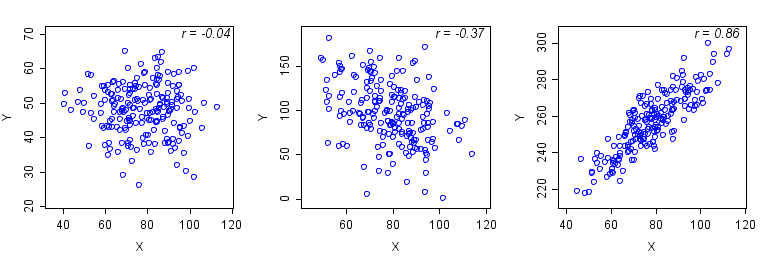

Introduction
We will use the body dimensions data set we have used in previous activities to test for correlations in biacromial diameter, age, and BMI.
To analyze the data, do the following:
1. Open this file with the data on body dimensions. In it you'll see measurements of biacromial diameter, age, and BMI. Each row of the table is a different person - for correlation analysis to work, it's necessary for the measurements from a single person to match row for row. There is also a column indicating whether the person was male or female.
2. If you only wanted to look at one pair of variables at a time, we could use scatterplots. Produce a scatterplot with regression lines for each variable, grouped by sex.
- Select "Graph" → "Scatterplot".
- In the window that pops up, select "Simple", then click "OK".
- There are three correlations we can calculate, between biacromial diameter and age, biacromial diameter and BMI, and age and BMI. In the next window that pops up, put these combinations into the "Y variables" and "X variables" boxes, like this.
- Lastly, click on "Multiple graphs..." and in the "Multiple Variables" tab select "In separate panels of the same graph". Click "OK" to produce the graphs.
{kind=link}
The graph that's produced will have three panels, one for each of the X,Y variable pairs you specified. The axes are not labeled with this type of layout, but the variables are given in the strip above each graph, and the first variable listed is the X-axis (so, the Biacromial diameter*Age graph uses biacromial diameter for the X-axis, and age for the y-axis).
Another way of getting a plot like this is to use a "Matrix plot".
- Select "Graph" → "Matrix plot", and then use the "Simple" option.
- Put in all of the variables.
- Under "Data view" click on "Regression" and select "Linear". This will give us a line through the data.
Our next step will be to calculate the correlations, and see if they are statistically significant.
3. Now we will calculate the correlations between each pair of variables, along with the p-values for each r.
Use "Stat" → "Basic Statistics", "Correlation". Put all three numeric variables into the "Variables" list, and select "Display p-values". Click "OK". You'll see a set of rows and columns that give correlations between all possible combinations of the three variables. The "Cell contents" block at the bottom is telling you what's being reported - for each combination of variables (called "cells"), the top number is the correlation coefficient and the bottom number is the p-value.
Copy these over to your worksheet, just like they are reported in MINITAB, with the correlation coefficient on top and the p-values below.
Challenge Question
Leaves of the sycamore tree, pictured to the left, were measured for seven different measurements: total length, width (at the widest point), length of the petiole (i.e. the short stem that attaches the leaf to the branch), petiole diameter, length of the longest side, number of primary veins, and weight (in grams). All lengths are in mm. The data are here.
1. Which pair of variables has the highest correlation? What is the correlation coefficient?
2. Does the highest correlation indicate a perfect correlation? How do you know?
3. Which pairs of variables are not significantly correlated? What are the correlation coefficients?
4. Look at all of the significant correlations - are the signs all positive, all negative, or a mix of positive and negative? Why would they show this pattern?
5. Do a matrix plot for these variables. Are there any pairs of variables that do not look like they are linearly correlated (that is, the points don't fall along a straight line)?
6. Based on this analysis, do sycamore leaves only vary in size, or do they vary in shape as well? How do you know?